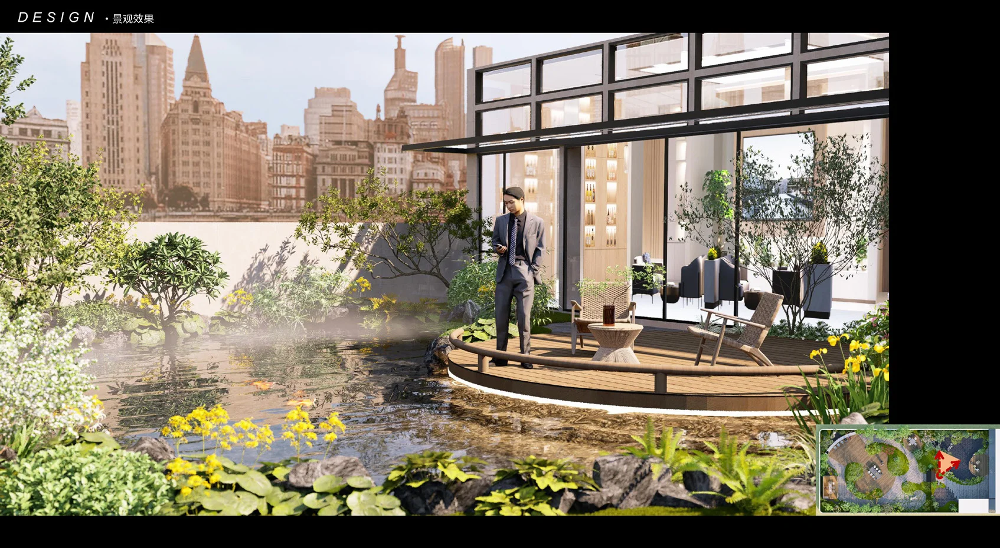
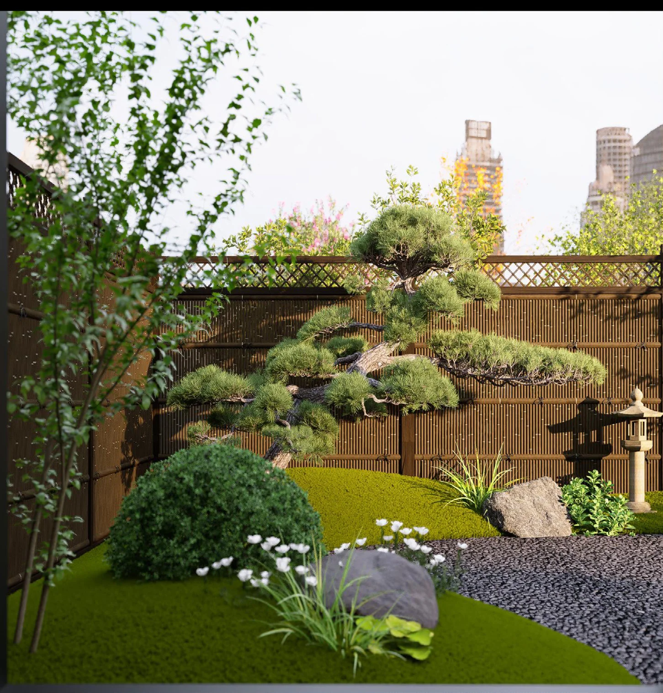

读懂场地READ THE SITE
从场地边界、既有条件与使用需求出发，让空间组织回应真实的生活场景。
ENVIRONMENTAL & LANDSCAPE DESIGN
02 / JUNTAI ROOFTOP GARDEN
均泰屋顶花园 · 马蹄莲之庭
沿曲线花径，走进城市之上的自然。
01 / WATERSIDE
水面映照花木，让室内的日常自然延伸至庭院。
01 — SELECTED WORKS
从都市高处到方寸庭院，
以五组设计，探索人与自然的相处方式。
02 — DESIGN APPROACH
让概念落在空间里，
让自然融入可被感知的日常。

从场地边界、既有条件与使用需求出发，让空间组织回应真实的生活场景。
从马蹄莲的曲线到卷草纹样，将自然意象转化为路径、平台与庭院的空间语言。
以植物、木石、水与光塑造氛围，在移步换景与昼夜变化中，留下可停驻的片刻。
03 — ABOUT THE DESIGNER
“让庭院成为生活的延伸，
也成为人与自然相遇的地方。”
以环境设计与风景园林为专业方向，关注庭院尺度中的空间秩序、自然意趣与使用体验。通过概念、平面与效果表达，探索具有东方意境的当代景观。
SELECTED RECOGNITION / 部分获奖与荣誉
获奖信息摘自个人作品集。